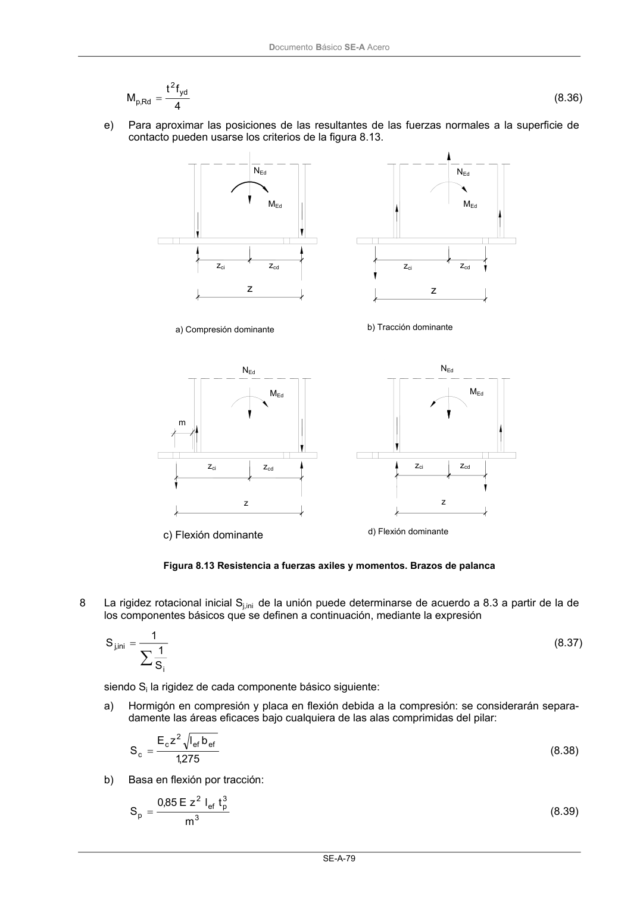
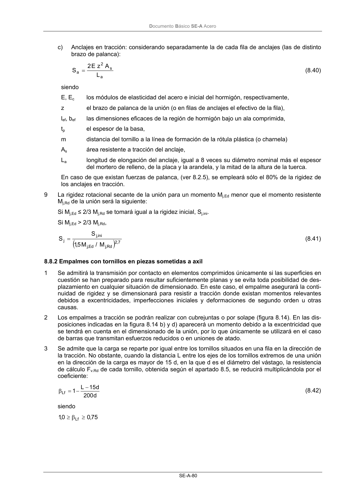

DB-SE-A · Fragmento de PDF p81 · versión 2007-10-23 · capa oficial
Formatos: JSON compacto · Markdown · PDF fuente
Ámbito del documento · texto del ámbito · documento y tablas
ID técnico a0122 · PDF pág. 81-82 · jerarquía no validada por persona · no es capítulo: sin_linea_de_encabezado · padre: raíz · literal original en el contenido: «∑»
∑ = i ini ,j S 1 1 S (8.37) siendo Si la rigidez de cada componente básico siguiente: a) Hormigón en compresión y placa en flexión debida a la compresión: se considerarán separa- damente las áreas eficaces bajo cualquiera de las alas comprimidas del pilar: 275 ,1 b l z E S ef ef 2 c c= (8.38) b) Basa en flexión por tracción: 3 3 p ef 2 p m t l z E 85 ,0 S = (8.39) NEd NEd MEd MEd zci zcd zci zcd z z NEd NEd MEd MEd a) Compresión dominante b) Tracción dominante c) Flexión dominante d) Flexión dominante zci zci zcd zcd z z m DocumentoBásico SE-A Acero SE-A-80 c) Anclajes en tracción: considerando separadamente la de cada fila de anclajes (las de distinto brazo de palanca): a s 2 a L A z E 2 S = (8.40) siendo E, Ec los módulos de elasticidad del acero e inicial del hormigón, respectivamente, z el brazo de palanca de la unión (o en filas de anclajes el efectivo de la fila), lef, bef las dimensiones eficaces de la región de hormigón bajo un ala comprimida, tp el espesor de la basa, m distancia del tornillo a la línea de formación de la rótula plástica (o charnela) As área resistente a tracción del anclaje, La longitud de elongación del anclaje, igual a 8 veces su diámetro nominal más el espesor del mortero de relleno, de la placa y la arandela, y la mitad de la altura de la tuerca. En caso de que existan fuerzas de palanca, (ver 8.2.5), se empleará sólo el 80% de la rigidez de los anclajes en tracción. 9 La rigidez rotacional secante de la unión para un momento Mj,Ed menor que el momento resistente Mj,Rd de la unión será la siguiente: Si Mj,Ed ≤ 2/3 Mj,Rd se tomará igual a la rigidez inicial, Sj,ini. Si Mj,Ed > 2/3 Mj,Rd,


PDF fuente redistribuible: copia fiel enlazada en esta página (SHA256 verificado).